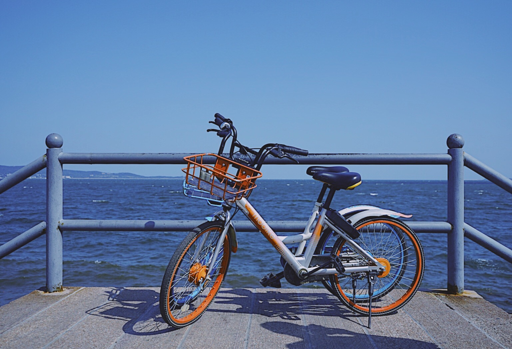
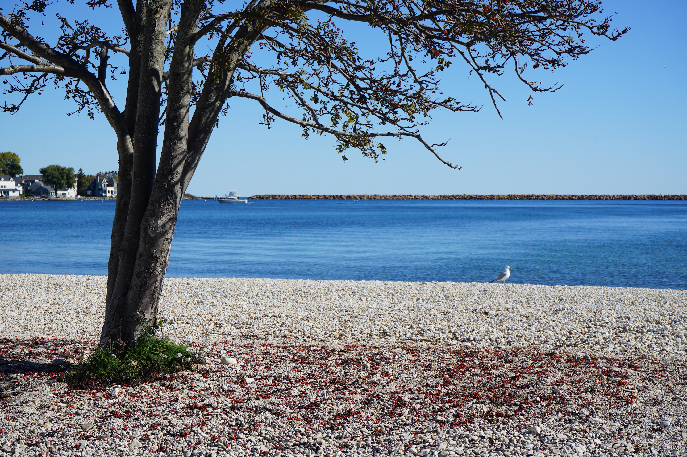

Hi! My name is Zhihui Zhu.When I was a child, I would often spend entire afternoons investigating the stones in my garden, the insects on the ground, and other common things that anyone could find but most choose to ignore. As I grew up, I tried my best to remember and attend to the smallest and most easily-overlooked things. So I gradually become a photography lover 📷 , because that enabled me to remain observant and capture even the tiniest moments that touched me.Observing and learning determines my input, but design enables my output and renders my thoughts useful things. And that is my understanding of what it means to be a "designer of thinking".I have always believed that patience and aggression, hard work and relaxation can exist simultaneously. I really look forward to and am excited about working in a group in which everyone is enthusiastic about what they and their colleagues are doing. I anticipate hearing from you!
Photography Work
 